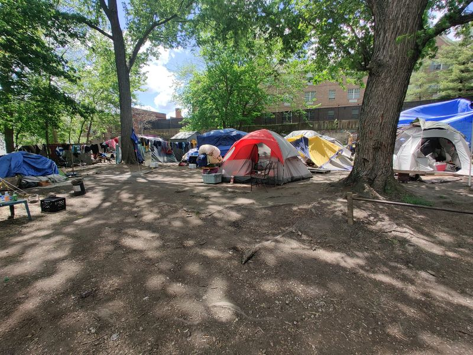

Mobile uploads
In the next couple days, an article will come out in the Akron Beacon Journal about our tent village. This was inspired by our loss of another lawsuit pushing for my right to shelter a very small group of people for a very limited time in the most extreme cases. (I am never allowed to shelter anyone ever in a tent on my personal property. It is not permitted by zoning.)
The city is meeting today to make a statement for this article.
It is important for you to know that I am creating a direct action, civil disobedience, occupy Movement on my own land. My entire point is that what is happening in America with homelessness is abhorrently wrong. It, in fact, is a crime against humanity. The fact that they won't let me shelter anyone ever on my own land speaks volumes of how they feel about homeless people. They don't care.
My energy is a little low this morning as I don't expect any good news to come out of Akron City Hall. Unfortunately, I expect the exact same outcome as last time. "Everything is fine. Sage is wrong. He will be prosecuted if he doesn't stop." In fact, I think it could be worse than last time because they might now realize that I'm not going to stop. So a stronger attack on me could be likely.
This is what I would ask from you. If you believe in some kind of cosmic force, I would love if you would send some loving and kind and compassionate thoughts into the universe. For our homeless brothers and sisters. For our politicians. For the people in our mayor's administration. For Mayor Horrigan.
They're just afraid. They are afraid that if I am allowed to "enable" people with a bathroom, heat, electricity, a shower and Internet access then every homeless person in a 1000 mile radius will come flocking to Akron. They will be overrun by drug addicts and lazy losers.
They are doing the best they can, just as I am doing the best I can.
Ironically, we all want the same thing: a safe place to live peacefully and quietly. We are just going at it from different ways.
I can tell you this, and you've heard it from much greater people than me: love is the only force that will solve these problems. Yes, my anger will get the best of me from time to time. But it's love that will be the true savior of humanity.
Please send love and hope and faith into the world today.
I love you for all you have done and all you will continue to do.
Sage